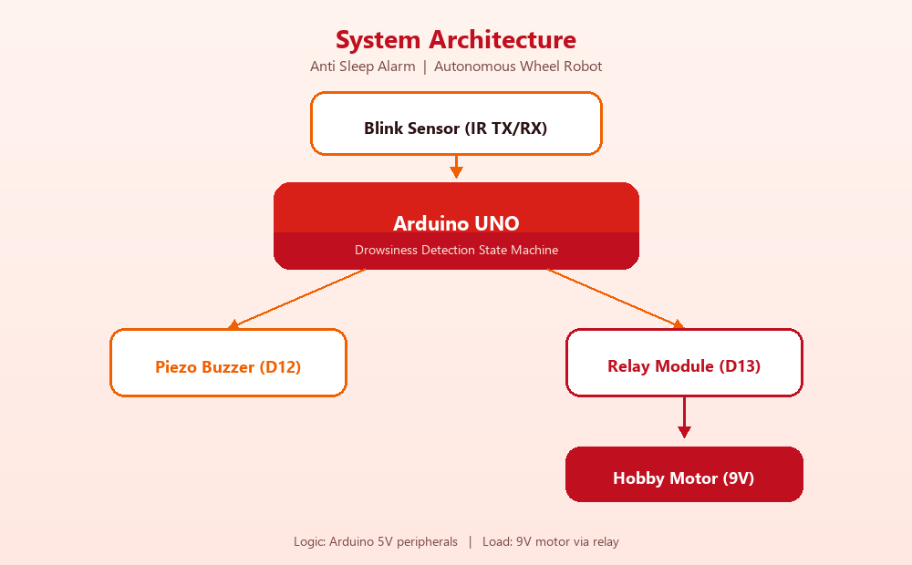
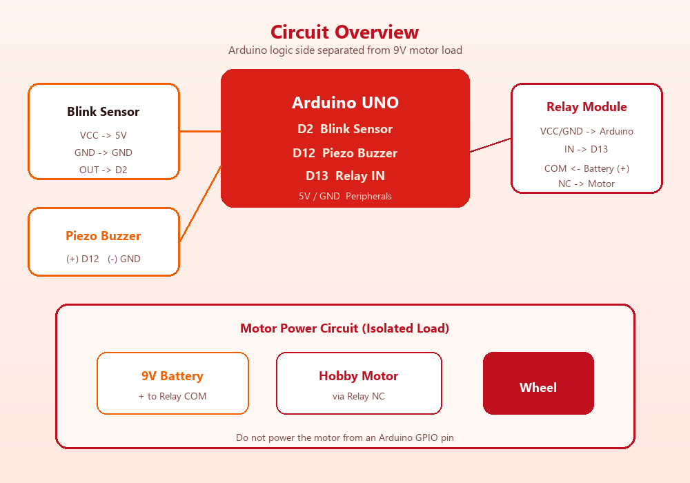
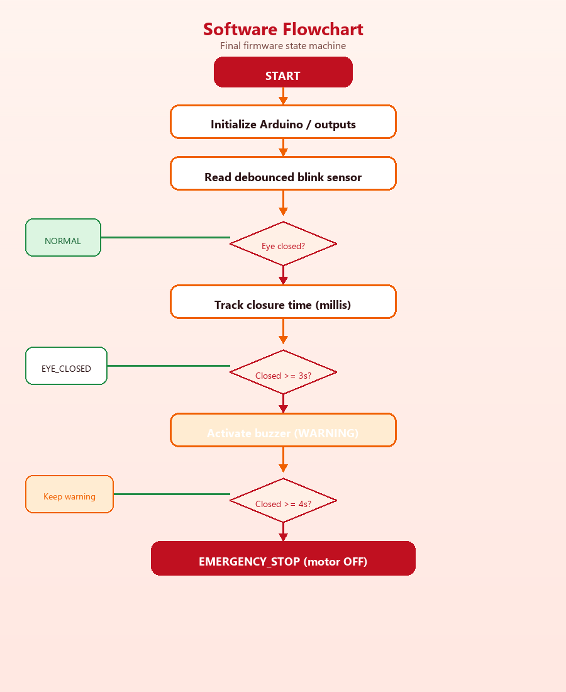

3 s
Warning threshold — buzzer activates
Anti Sleep Alarm
An Arduino UNO wheel-robot prototype that watches eye closure with an IR blink sensor, sounds a piezo warning, and cuts motor power through a relay.
Overview
Built as an academic robotics project and packaged as a clean portfolio repository. The physical demo uses spectacles-mounted IR sensing and a hobby motor stand-in for vehicle motion.

Warning threshold — buzzer activates
Emergency threshold — motor stop via relay
Sensor · Buzzer · Relay pin map
System Architecture
The blink sensor feeds the Arduino state machine. Warning goes to the buzzer; emergency action opens the motor path through the relay.

Hardware
Motor current stays on the battery/relay side. Arduino GPIO never drives the hobby motor directly.
| Component | Purpose |
|---|---|
| Arduino UNO | Embedded controller |
| IR blink sensor | Eye open / closed sensing |
| Transparent spectacles | Sensor mount near the eye |
| Piezo buzzer | Audible alert |
| Relay module | Isolates / switches motor load |
| Hobby motor + wheel | Motion / stop demonstration |
| 9V battery | Motor power supply |
| Device | Arduino | Notes |
|---|---|---|
| Blink sensor OUT | D2 | VCC→5V, GND→GND |
| Piezo buzzer | D12 | Active HIGH |
| Relay IN | D13 | VCC→5V, GND→GND |
| Hobby motor | — | 9V via relay COM/NC |
Detection Logic
Final firmware matches the original AIM / Arduino timing: warn at 3 seconds, stop at 4 seconds. Eye-open resets the system.
Normal
Motor ON · Buzzer OFF
Warning
Motor ON · Buzzer ON
Emergency
Motor OFF · Buzzer ON
Recovery
Reset to Normal
Diagrams
Visual references for wiring domains and the non-blocking firmware path.


Firmware
Non-blocking state machine with configurable relay polarity, debounce, and Serial diagnostics. File: anti_sleep_alarm.ino
Loading firmware…Demonstration
Links from the original documentation. Google Drive sharing permissions may be required for playback.
How to run
anti_sleep_alarm.inoSafety
Contribution
Student ID 22052533 · Course CSE-3
Primary documented contribution: documentation — research, technical writing, editing & formatting, visuals, and review/revision with the team.
Team: Sudeep Dutta · Dipanwita Sen · Ankit Biswas · Pratik Maity